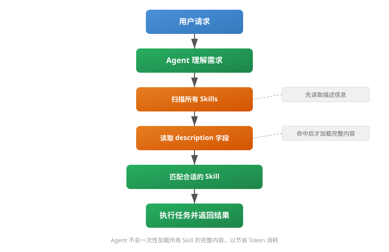
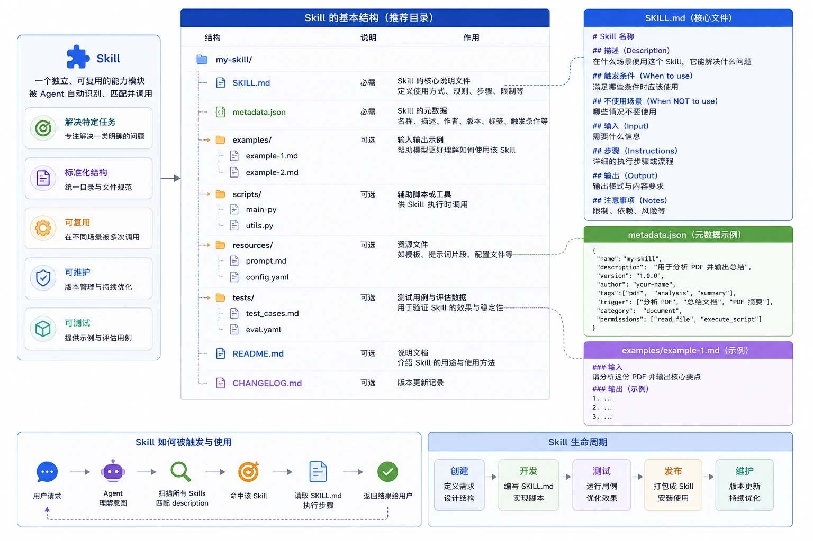

Skills 目录结构
理解 Skill 的目录结构和运行机制，是构建可维护、可复用 AI Agent 能力的基础。
本文从零开始拆解一个标准 Skill 的目录结构、各文件作用和完整工作流程。
什么是 Skill
Skill 是一个独立的能力单元，用来完成某一类特定任务。
如果把 Agent 比作操作系统，Skill 就像应用程序；如果把 Agent 比作项目经理，Skill 就是可以被调用的专业能力。
Skill 的常见类型
以下是一些典型的 Skill 应用场景：
| 类型 | 说明 | 适用场景 |
|---|---|---|
| PDF 文档分析 | 提取 PDF 内容并生成摘要 | 文档处理、信息提取 |
| 网页抓取 | 自动化获取网页数据 | 数据采集、信息监控 |
| SQL 优化 | 分析和优化 SQL 查询 | 数据库性能调优 |
| 数据统计 | 数据计算和统计处理 | 数据分析、报表生成 |
| 图片识别 | 识别图片中的内容 | OCR、图像分类 |
Skill 与 Agent 的关系
Skill 本身不负责决定什么时候使用，真正负责决策的是 Agent。
完整的工作流程如下：

关键要点：Agent 不会一次性加载所有 Skill 的完整内容。它会先读取每个 Skill 的描述信息，命中目标 Skill 后再加载完整内容。这样做的原因是：如果有几百个 Skills，每次都全部加载会极其浪费 Token。
Skill 的标准目录结构
一个完整的 Skill 不是单个文件，而是包含多个文件的目录。
以下是一个标准 Skill 的完整目录结构：
my-skill/ │ ├── SKILL.md ← 核心执行文件 ├── metadata.json ← 元信息 ├── examples/ ← 示例目录 │ ├── example1.md │ └── example2.md │ ├── scripts/ ← 可执行脚本 │ ├── main.py │ └── utils.py │ ├── resources/ ← 资源目录 │ ├── prompt.md │ └── config.yaml │ ├── tests/ ← 测试目录 │ ├── test_cases.md │ └── eval.yaml │ ├── README.md ← 使用说明 │ └── CHANGELOG.md ← 变更日志
接下来逐个拆解每个文件和目录的作用。

SKILL.md：核心执行文件
这是 Skill 中最重要的文件，定义了 Skill 的所有执行逻辑。
它包含以下关键信息：
| 部分 | 说明 | 作用 |
|---|---|---|
| Description | Skill 的功能描述 | 供 Agent 匹配使用 |
| When to use | 明确适用场景 | 避免误触发 |
| When NOT to use | 明确不适用场景 | 防止与其他 Skill 冲突 |
| Input | 定义输入格式 | 规范调用方式 |
| Instructions | 执行步骤 | 指导任务执行 |
| Output | 输出格式说明 | 保证结果一致性 |
以下是一个规范的 SKILL.md 示例：
实例
## Description
用于分析 PDF 内容并生成摘要。
## When to use
适用于：
- PDF 阅读
- 摘要提取
- 内容分析
## When NOT to use
不适用于：
- 图片编辑
- 视频处理
## Input
PDF 文件
## Instructions
1. 提取文本
2. 识别章节结构
3. 总结主要内容
4. 输出重点
## Output
Markdown 格式摘要
常见的错误写法
很多初学者会写出过于简略的 SKILL.md，例如：
不推荐写法
读取 PDF
总结内容
返回结果
这种写法的问题在于：不知道什么时候使用、不知道什么时候不用、输出格式不明确、容易和其他 Skill 冲突。
一个合格的 SKILL.md 应该让 Agent 一眼就能判断：这个 Skill 适不适合当前任务。
metadata.json：Skill 元信息
这个文件提供机器可读的结构化数据，帮助 Agent 快速筛选 Skill。
实例
"name": "pdf-analyzer",
"version": "1.0.0",
"description": "分析 PDF 并生成摘要",
"tags": ["pdf", "summary"],
"category": "document"
}
常见字段说明
| 字段 | 作用 | 重要性 |
|---|---|---|
| name | Skill 名称 | 必填 |
| description | 功能说明，Agent 依靠它做匹配 | 最重要 |
| version | 版本号 | 推荐 |
| tags | 标签，便于检索 | 推荐 |
| category | 分类 | 可选 |
| author | 作者 | 可选 |
| permissions | 所需权限 | 可选 |
其中 description 字段最为重要，因为 Agent 通常依靠它做匹配。
匹配过程大致如下：用户提出请求后，Agent 扫描所有 Skill 的 description，发现匹配的描述后加载完整的 Skill 内容并执行。
examples：示例目录
很多开发者忽略这一部分，但它实际上非常重要。
目录结构
examples/ ├── example1.md ├── example2.md
示例文件内容
实例
帮我分析这个 PDF
输出：
# 文档总结
## 核心内容
1. ...
2. ...
3. ...
examples 的作用
| 作用 | 说明 |
|---|---|
| 提供 Few-shot 示例 | 帮助模型通过示例理解期望行为 |
| 规范输出格式 | 通过示例明确输出结构和风格 |
| 提高输出稳定性 | 减少随机行为，让结果更可预测 |
经验上，好的 examples 往往比增加提示词更有效。
scripts：可执行脚本
Skill 不仅仅是提示词，有时需要真正执行代码来完成实际工作。
常见需要脚本的场景包括：读取 PDF、执行 OCR、调用数据库、数据处理、生成图表等。
目录结构
scripts/ ├── main.py └── utils.py
Python 脚本示例
实例
# 功能：从 PDF 文件中提取文本内容
from pypdf import PdfReader
# 打开 PDF 文件
reader = PdfReader("demo.pdf")
# 存储提取的文本
text = ""
# 遍历每一页并提取文本
for page in reader.pages:
text += page.extract_text()
# 输出全部文本内容
print(text)
Skill 的工作流程是：读取文件 → 执行脚本 → 获取结果，然后再将结果交给大模型处理。
resources：资源目录
用于保存辅助内容，将配置与代码分离。
目录结构
resources/ ├── prompt.md ├── config.yaml
可能包含的资源类型
| 资源类型 | 说明 | 示例 |
|---|---|---|
| Prompt 模板 | 可复用的提示词模板 | prompt.md |
| 配置文件 | 参数和设置 | config.yaml |
| 文本模板 | 邮件、报告模板 | template.txt |
| 图片资源 | 图标、示意图 | logo.png |
| SQL 模板 | 预定义的查询模板 | query.sql |
配置文件示例
实例
# 摘要相关配置
max_length: 1000 # 摘要最大长度（字符数）
language: zh # 输出语言：zh=中文, en=英文
将配置放在独立文件中，以后修改参数就不需要改动代码。
tests：测试目录
成熟项目通常都会包含测试，用于验证 Skill 的效果和稳定性。
目录结构
tests/ ├── test_cases.md └── eval.yaml
测试用例示例
实例
输入：
帮我分析 PDF
期望：
输出摘要
包含关键点
测试的作用
| 作用 | 说明 |
|---|---|
| 验证效果 | 确保 Skill 输出符合预期 |
| 回归测试 | 修改后验证旧功能不受影响 |
| 自动评估 | 配合自动化流程批量测试 |
| A/B 测试 | 对比不同版本的输出质量 |
没有测试的 Skill 容易出现"改了一句话，旧功能突然失效"的问题。
README：使用说明
README 面向开发者，说明如何安装和使用这个 Skill。
实例
复制到 skills 目录
# 使用方法
上传 PDF
# 输出格式
Markdown
它解决的核心问题是：以后自己都不知道怎么用自己写的 Skill。
完整案例：PDF 分析 Skill
下面用一个完整的例子串联以上所有概念。
目录结构总览
pdf-analyzer/ ├── SKILL.md ├── metadata.json ├── examples/ │ └── summary.md ├── scripts/ │ └── extract.py ├── tests/ │ └── eval.md └── README.md
完整调用流程
用户：
上传 PDF 并总结
↓
Agent：
扫描所有 Skills
↓
发现：
description: 分析 PDF 并生成摘要
↓
命中 pdf-analyzer
↓
读取 SKILL.md
↓
调用 extract.py
↓
提取 PDF 内容
↓
生成摘要
↓
返回结果
为什么 Skill 要设计成目录结构
很多人会问：为什么不用一个 prompt.txt 搞定所有事情？
原因是规模一大就会失控。
单文件方案的问题
| 问题 | 具体表现 |
|---|---|
| 无法维护 | 所有内容堆在一个文件，修改困难 |
| 无法测试 | 没有测试用例，改完不知是否正常 |
| 无法复用 | 每个 Skill 都要从头写 |
| 无法版本管理 | 难以追踪变更历史 |
| 无法多人协作 | 一个文件多人改容易冲突 |
目录化方案的优势
| 优势 | 实现方式 |
|---|---|
| 可维护 | 各文件职责清晰，修改定位快 |
| 可复用 | 脚本和配置可以跨 Skill 共享 |
| 可测试 | 独立测试目录，支持自动化验证 |
| 可扩展 | 新增功能只需添加文件 |
| 可发布 | 目录打包即可分发 |
总结
Skill 本质上不是提示词，而是一套完整的软件能力包。
核心文件关系
SKILL.md
↓
定义行为
metadata.json
↓
定义信息
examples/
↓
定义示例
scripts/
↓
定义能力
tests/
↓
定义质量
README
↓
定义使用方式
Prompt 只能解决一次问题，而 Skill 是把能力沉淀成资产。

点我分享笔记